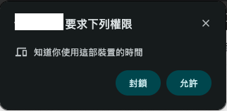
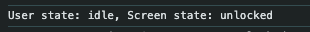
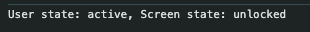
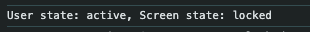
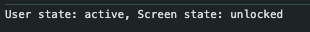
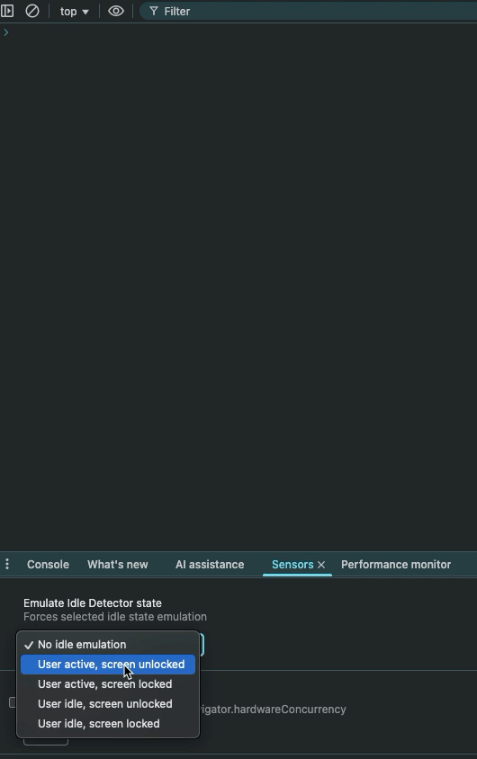

用 Idle detection API 檢測用戶狀態
有許多即時通訊軟體會顯示當前用戶的上線狀態，甚至會自動檢測用戶是否狀態為「離開」，像是：Microsoft Teams、Discord 等。若要使用 Web 技術實現自動檢測這件事情，第一個想到的可能是使用 Page Visibility API 來檢測「頁面是可見的還是隱藏的」，進而判斷是否要讓用戶呈現「離開」狀態。但如果使用者離開的定義是 使用者鎖定畫面或長時間沒有操作，這用 Page Visibility API 是無法精準判斷的，因為頁面的隱藏有可能是 最小化、切換分頁、鎖定畫面等情境 。如果要精準判斷鎖定畫面或是長時間沒有操作，可以考慮使用 Idle Detection API。
什麼是 Idle Detection API？
Idle Detection API 是 Chrome 在 94 版中添加的 API，該 API 可以檢測用戶是否處於閒置狀態，包含：是否鎖定畫面、使用者是否沒有跟鍵盤、滑鼠、螢幕互動等。這對於即時通訊軟體而言可說是非常有用的 API，即使用戶切換分頁、最小化視窗，只要還在操作就不會被判定是「離開」。
注意：該 API 目前只在 Chromium 系列的瀏覽器有支援，Firefox、Safari 因隱私和安全等考量並沒有跟進。詳細資訊可以參考「Chrome 94添加存在隱私爭議的閒置偵測API，Firefox和Safari不跟進」文章。也因為只有部分瀏覽器有支援，建議可以在程式碼中檢查該 API 是否可用，檢查的判斷式為：
if ('IdleDetector' in window) { ... }。
使用 Idle Detection API
下方是一段 Idle Detection API 的範例程式碼：
1 | async function detect(func) { |
當執行 IdleDetector.requestPermission() 時，瀏覽器會彈出下方權限許可畫面，用戶需要點擊「允許」才能夠使用 Idle Detection API：

當用戶允許後，就會開始檢測。由於 threshold 設置為 60 秒，當用戶閒置 60 秒時，會在 Console 印出狀態為 idle：

當用戶重新使用時，會在 Console 印出狀態為 active：

如果用戶鎖定畫面，會在 Console 印出狀態為 locked：

如果用戶解除鎖定畫面，會在 Console 印出狀態為 unlocked：

用 DevTool 模擬
Chrome 推出 Idle Detection API 的同時，也在 DevTool 新增了模擬閒置事件。可以透過「Sensors」分頁找到「Emulate Idle Detector state」區塊，在這裡可以針對四種情境進行切換：

結論
透過 Idle Detection API 可以更精準地判斷使用者是否處於閒置狀態，不過該 API 現在只有 Chromium 系列瀏覽器有支援，這對於需要同時支援多種瀏覽器的應用程式來說仍然需要用 Page Visibility API 當作 Fallback。